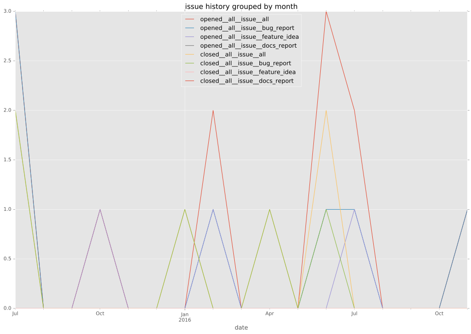
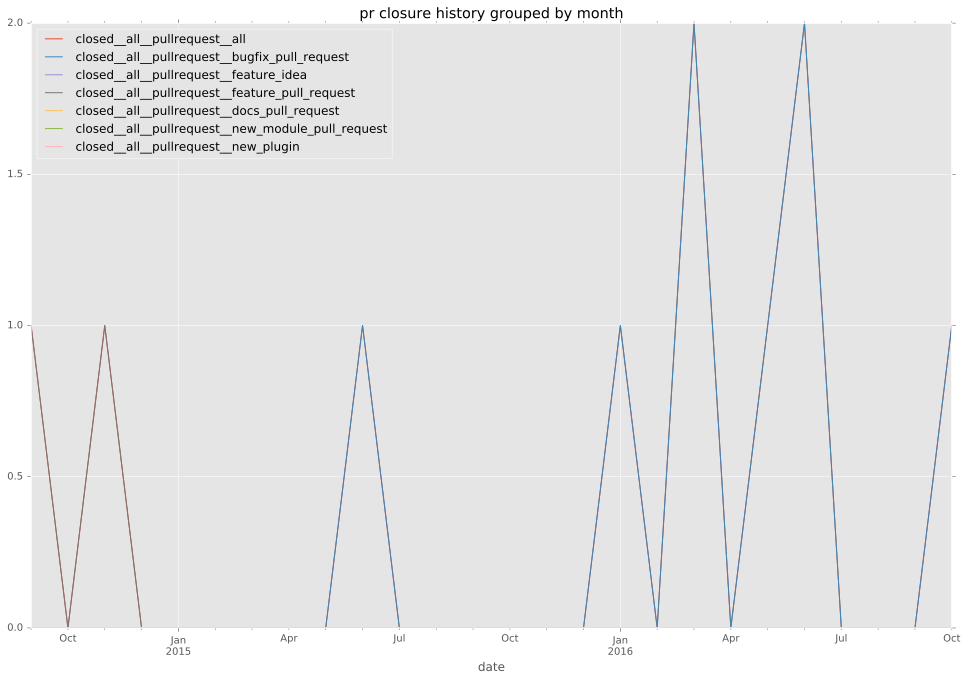

authors
- frenck
maintainers
- ansible
contributors
- frenck : 64 commits
- wincent : 10 commits
- chulkilee : 3 commits
- bcoca : 3 commits
- tomxtobin : 2 commits
- chris-l-weber : 2 commits
- resmo : 1 commits
- mscherer : 1 commits
- dagwieers : 1 commits
total issue counts
unknown: 1
bugfix pull request: 7
docs report: 2
pullrequest: 12
feature pull request: 3
feature idea: 3
issue: 11
new plugin: 1
bug report: 6
issue history

pullrequest history

days open by issue type
feature pull request
count: 2
std: 26.1629509039
min: 0
max: 37
median: 18.5
mean: 18.5
all
count: 23
std: 78.6210202308
min: 0
max: 248
median: 0.0
mean: 44.9130434783
pullrequest
count: 0
std: nan
min: nan
max: nan
median: nan
mean: nan
docs report
count: 1
std: nan
min: 0
max: 0
median: 0.0
mean: 0.0
bugfix pull request
count: 11
std: 38.9944051931
min: 0
max: 97
median: 0.0
mean: 25.1818181818
feature idea
count: 0
std: nan
min: nan
max: nan
median: nan
mean: nan
issue
count: 0
std: nan
min: nan
max: nan
median: nan
mean: nan
new plugin
count: 2
std: 0.0
min: 248
max: 248
median: 248.0
mean: 248.0
bug report
count: 5
std: 80.4350669795
min: 0
max: 186
median: 2.0
mean: 44.6
closures grouped by total days open